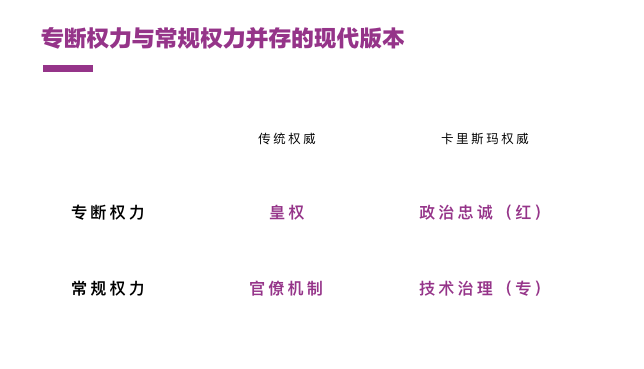

第三篇覆盖周雪光所著《中国国家治理的制度逻辑——一个组织学研究（The Institutional Logic of Governance in China - An Organizational Approach）》中第四章《中国政府的治理模式:一个“控制权”理论》的内容，该篇论文的PDF可在这里找到。
1768年春天到秋天的短短八个月，清高宗弘历在乾隆盛世登峰造极之时，却经历了一场搅动整个大清政治与社会生活的事件，这便是1768年的中国妖术大恐慌——叫魂。此股妖风冲击半个中国，民众歇斯底里的恐慌和涌动的流言蜚语被弘历解读为「叛乱」，亲自督导全国范围各级官员大清查，一时间栽赃嫁祸、冤假错案、严刑逼供成行，然而仅仅八个月，事件不了了之。
「叫魂」是弘历皇帝亲自督导的、采用「政治动员」的方式来治理和整顿常规官僚治理模式事件，而此类政治运动在中国历史上此起彼伏，延绵不断，是一个突出的政治现象，贯穿整个中国大历史，是中国国家治理逻辑的重要组成。
国家运动的逻辑
运动型治理的显著特点是打断现有官僚体制的常规运作，以自上而下的方式调动资源集中力量完成特定任务。例如1958年至1960年间的「大跃进」运动，其深层机制是实现高度集权和国家对社会资源的全面控制，努力完成将社会改造的使命，以获得超凡禀赋的执政合法基础。
国家运动发生的三个条件是：
- 社会改造的强烈抱负以及背后的绩效合法性压力；
- 国家法理基础薄弱，缺少制度化、常规化、和专业化途径实现社会改造；
- 国家专断权大，缺少社会制约。
与前文一脉相承的逻辑，在中国的大一统体制中，中央集权和地方治理之间的深刻矛盾，使得运动型治理逻辑的产生和延续有其必然性，因为国家治理的规模和多样性，官僚体制常规型治理的失败产生了对运动型治理的需要，换言之，后者是前者在失败时产生的临时替代或纠正机制。
因此，运动型治理机制并非偶然或个人意志，而是有一整套制度设施、实现环境、和内在动力，是中国国家治理制度逻辑的重要组成。
常规机制的弊端
官僚组织所代表的常规机制，和运动治理的动员机制互为制约，前者结构稳定、边界明确、各司其职，抑制运动型机制；后者需要打破常规、统一思想、集中资源，削弱官僚体制的稳定性和效率。
和韦伯的官僚体制（核心是作为组织结构和组织行为基础的规章制度）不同，中国官僚体制在数千年来的发展中超越了组织制度而成为了一个非正式人际关系交错的社会制度。其核心在于上下级忠诚和信任的向上负责制，而不在用规章制度约束和保护的自上而下与自下而上的关系。
在这个大背景下，中国官僚制度形成了一套自有的组织行为：
- 趋于规避风险，因无稳定和明晰制度保护，上级主观评价判断又难以琢磨，于是小心翼翼；
- 更倾向于投资人际关系，用于降低风险；
- 揣摩上级意图，察言观色拿捏分寸成为行政能力的重要能力。
这些行为又强化了中国官僚体制盘根错节、缺少正式制度、上下级信息不畅的特点。
当组织各方的交易成本（契约、监管、协调、激励等）因非正式关系、缺少制度保护、信息不畅而急剧升高时，在某一特定时刻，就会促使心的组织形式发生作用。这个时刻就是常规和运动两种治理机制互相转化的时刻。
运动型治理的必要性
交易成本的增高是任何形式的组织中经常发生的事情，包括企业。但与政府不同，企业有多种方式降低组织交易成本，包括组织转型、兼并剥离、更换管理者等手段调整组织内部权力结构。
而政府的如下特点导致中国治理对这些问题的解决缺乏办法：
- 政府的天然垄断和封闭属性使得许多市场机制失灵；
- 官僚体制的规模巨大，向上负责导致的漫长管理链条；
- 地方性差异带来的灵活性诱发上下级的猜疑和失控；
- 技术治理的成本和难度极高。
这些挑战使得中国国家治理必须采取一种不断打破封闭型官僚体制的常规状态，重新分配既得利益，降低交易成本，调整官僚体制进入新的轨道。
可以说，间歇性的运动型治理在中国，如同官僚体制高压锅上的气阀，在必要的时刻，释放负荷累累的交易成本，是一种另辟蹊径的临时性替代机制。
卡里斯玛权威的需要
除了运动型治理的内在需要，即对总是趋于僵化的中国官僚体制的平衡和控制，它还有卡里斯玛权威在现代组织制度上延续的需要。
既然执政党的权威合法性建立在超凡禀赋的民族复兴大业上，便需要驾驭常规、资源动员、顶层设计和安排的不容置疑的权力，那么现代社会中的法理权威必然受到排斥。管理庞大国土的现代官僚体制又不可能被完全摧毁，因此在现代社会常规化的同时，卡里斯玛权威需要某种手段随时切换治理体制的变速箱档位，以保护起合法性逻辑。
这一点的重要体现有如下几个方面：
- 打破行政边界的党务系统，随时供统筹安排和政治动员之需，党政两条线互相互动牵制，在某些业务领域行政体系占据领导地位（如环保）、而在综合机构则由党务体系领导政治挂帅，贯彻自上而下的指令；
- 人事制度上培养又红又专（兼具政治忠诚和技术治理）的人才，用党务和政务两套标准并进保证运动和常规的双重机制共管，这是执政党对传统向上负责制的中国官僚体制的修正，体现了现代社会管理的特点和需要；
- 小规模的运动型治理与日常治理相结合，例如2017年年底的北京市市容市貌整治运动。
因此，在传统权威下专断权力与官僚体制并存延续到现代，变成了卡里斯玛权威下党与政、红与专、政治忠诚与技术治理的并存。

但我们不能简单认为党和政便是传统皇权和官僚机构的分别延续，事实上，各级官员既要听命于自上而下的专断权力、又要精于业务专业行使常规权力，这使得国家的党政一体化在实际运行中已经产生了互相渗透同化甚至相互约束的现象，例如最高检在其官方刊物《检察日报》质疑北京清理广告牌、亮出天际线运动的合法性（链接）。
在这个意义上，中国已经逐渐摆脱迫于压力而必须执行国家运动的怪圈，而形成一种双轨运行的常规机制，用运动突破常规的惰性完成伟大使命、用常规避免运动的失控完善法制法规。
写在最后
中国几千年形成的大一统与地方差异并存、无上的皇权和发达的官僚系统并存，使得国家运动作为一种专断权力约制常规权力治理手段，广泛存在于大历史中，它既满足权威（无论是传统或是卡里斯玛权威）完成重大使命的内在需要，又帮助消化僵化官僚体制不断升高的交易成本带来的压力。
无论是迫于官僚系统的压力（如三反五反运动）、还是完成重大社会使命，国家运动通常在短时间内完成了庞大的社会动员和资源调集，同时又难以持续。
当国家法理基础日益完善，社会制约手段越来越多、社会越来越倾向多元，国家运动的必要性、效果、和合法性慢慢受到阻力，但执政阻力未曾改变——一个短时间内难以改变的、向上负责的、规避风险的、趋向封闭和僵化的、行使常规权力的官僚体系，与执政党伟大使命的矛盾。
于是，在这个背景下，执政党逐渐形成了一种具有现代组织管理风格的方式，即运动和常规治理双轨运行的治理机制：
- 用运动型治理突破常规权力的惰性和桎梏，持续不断完成伟大的经济和社会使命，这是卡里斯玛权威执政合法性的基本诉求；
- 同时又用常规技术治理避免运动的失控，持续不断完善法制法规、开放监督和监管，这是现代公民社会不可避免的趋势。
总而言之，中国的运动型政治治理自古有之，卡里斯玛权威更是需要国家运动完成重大成就，而在日趋多元的现代社会，执政党所执行的是一套全新的运动和常规双轨治理的逻辑，又红又专，适应现代组织发展的当前需要。
值得思考的是，我们所谈的所有逻辑的根源，都在于解决两个核心驱动：
- 中国官僚体制中因为向上负责制、非正式关系、以及地区差异所不可避免的交易成本增高问题——需要运动进行整治；
- 卡里斯玛权威对于社会改造和领导伟大国家成就的天生诉求——需要运动进行统一领导。
当这两个驱动在未来发生变化，例如地区的经济和社会差异缩小、中产社会形成新的社会关系、甚至信息技术对信息流动的影响，那么我们今天讨论的治理形式，会有怎样的变化，让我们拭目以待。